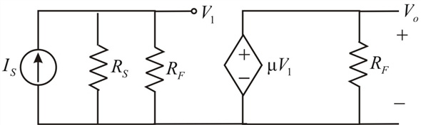

From Figure 1, write the expression for output voltage .
.
Define open loop gain of the amplifier  is,
is,
Substitute for  in the equation.
in the equation.
Expression for open loop gain  is.
is.
(a)
Refer to the circuit diagram of voltage amplifier in Figure P10.61 (a) in the textbook.
Draw the equivalent circuit of voltage amplifier.

Figure 1
From Figure 1, write the expression for output voltage.
Define open loop gain of the amplifier is,
Substitute for in the equation.
Expression for open loop gain is.
From Figure 1, the feedback factor  is,
is,
Define closed loop gain.
Closed loop gain of the amplifier is,
Substitute for  and
and  for
for  in the equation.
in the equation.
Determine the expression for the voltage gain.
Substitute for in the equation.
Therefore, the expression for the voltage gain  is.
is.
Refer to circuit diagram of BJT amplifier in Figure P10.61 (b) in the textbook.
Find the Thevenin voltage.
Find the base current .
.
Substitute for  and 100 for
and 100 for  in the equation.
in the equation.
Find the Trans conductance .
.
Trans-conductance  of the amplifier is.
of the amplifier is.
Determine the input resistance.
Therefore, the input resistance is.
Find the output resistance.

Therefore, the output resistance  is.
is.
Calculate the voltage gain for stage-1.
Calculating the voltage gain for stage-2:
Calculate the voltage gain for stage-3:
Determine the actual value of voltage gain:
Therefore, the voltage gain  is.
is.